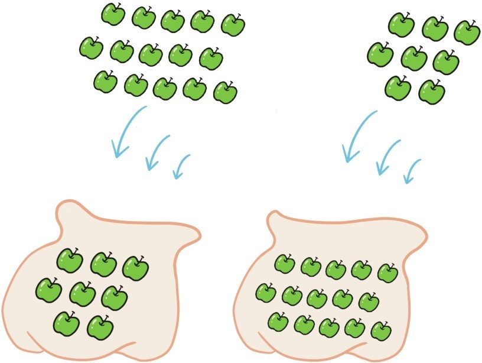
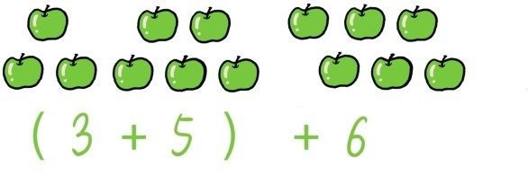
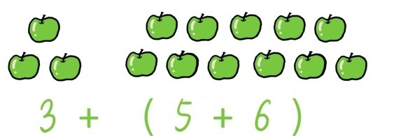
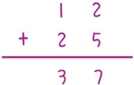

——数的运算的基本规律（上）
关于数的加减乘除运算有5种非常基本的规律，称为五大运算定律。这一节先介绍其中的两个运算定律——加法交换律和加法结合律。
如果在一个空袋子中先放入8个苹果，然后再放入15个苹果，而在另一个空袋子中先放入15个苹果，然后再放入8个苹果，不用计算，仅通过常识也能断定，这两个袋子中的苹果数量将是相等的。

写出等式就是
8+15=15+8
类似的等式非常多，比如0+2=2+0，5+7=7+5，13+28=28+13……
从这一类等式中，我们可以总结出一个规律：把加号左右两边的数调换后，加法的结果不会改变。我们称这个规律为加法交换律。
接下来，我们来讲加法的另一个规律。上图从左到右三堆苹果的数量分别是3，5，6。如果我先把第一堆和第二堆苹果结合在一起，然后再加入第三堆苹果，如此得出的总苹果数应该是(3+5)+6。

但是如果把第二堆和第三堆苹果先结合在一起，然后再加入第一堆苹果，如此得出的总苹果数应该是3+(5+6)。

其实这两种方法实质上都是把3堆苹果结合在一起，所以最终苹果的数量是一样的，因此无需计算就可以知道等式(3+5)+6=3+(5+6)。根据同样的道理，(16+9)+22=16+(9+22)，(24+11)+7=24+(11+7)……从这一类等式中，我们可以总结出一个规律：3个数相加时，中间的数不论先和前面的数相加，还是先和后面的数相加，最终相加的结果是不会改变的。我们称这个规律为加法结合律。
很多人在此可能会觉得这个加法交换律和加法结合律似乎很平淡无奇，大家在计算过程中也都熟悉这两个结论，只是没有提炼出来而已。所以有人可能会问这样一个问题：
问题11：为什么要去提炼加法交换律和加法结合律这个简单的东西？加法交换律和结合律有什么用？
实际上提炼加法交换律和结合律就是提炼加法运算的精髓。这里又涉及另一个问题：
问题12：除了加法交换律和结合律以外，加法是否还有其他运算定律？
注意加法交换律和结合律分别涉及两个数，和3个数相加。如果涉及4个数或者更多数相加时，也会出现类似的等式，比如
(3+4)+(8+6)=[(8+4)+6]+3。
那么有没有必要从这类等式出发，再总结出新的加法运算规律？没必要！因为所有这类等式都可以从加法交换律和结合律出发严格推导出来，不涉及计算。以下是关于上面这个等式的推导
(3+4)+(8+6)
=3+[4+(8+6)]……………………加法结合律
=[4+(8+6)]+3……………………加法交换律
=[(4+8)+6]+3……………………加法结合律
=[(8+4)+6]+3……………………加法交换律
到了这里，就可以回答之前的问题9了。正是加法交换律和结合律保证了多个数不论以什么方式相加，结果都是一样的。所以，加法实质上只有两种定律：加法交换律和加法结合律。其他一切加法运算规律都可以由这两个定律推导出来。可能有人会质疑：(3+4)+(8+6)=[(8+4)+6]+3这种等式简单计算就可以得到，为什么还需要用这么复杂的推导？这里涉及的数字都是很小的，如果等式中的数字变得很大，比如变成(5134+2049)+(181+363)=[(181+2049)+363]+5134时，推导就显得非常轻巧了。正所谓“攻城为下，攻心为上”，不用动手计算，仅仅通过推导得到这些等式，恰恰体现了运算定律的精妙。
其实在小学生经常做的加法竖式计算中，就隐蔽地用到了加法交换律和结合律，比如

如果把这个计算过程分解成等式就是
(10+2)+(20+5)=(10+20)+(2+5)。
提问时间
1.4.1 请用加法交换律和结合律推导出(10+2)+(20+5)=(10+20)+(2+5)。
1.4.2 请用加法交换律和结合律推导出[(16+29)+301]+(209+511)=[(301+29)+209]+(511+16)。